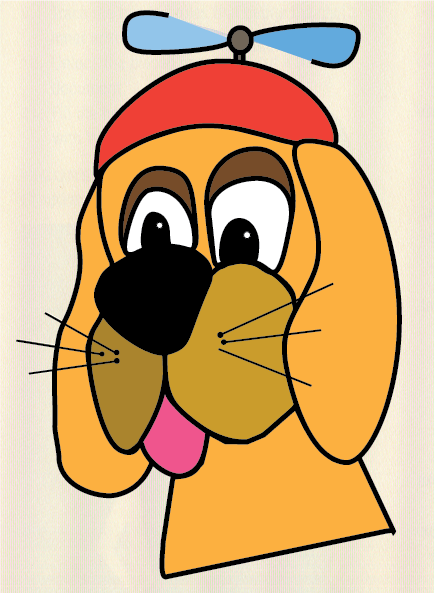
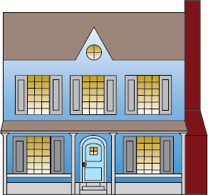

CHRISTOPHER ROJANO
Contact Chris Rojano
Biography
Christopher Rojano is a student at Seminole State College of Florida. He is studying towards his Bachelor's Degree in Fine Arts. His focus is taking courses that will help him develop and enhance in Computer Animation. He is very detail-oriented and a perfectionist in his work. He has a passion for drawing and the arts.
Skills
- HTML
- CSS
- JavaScript
- Web Images
- Photoshop
- User Interface Design
- User Experience
- Web Development
- Time Management
- Communication
Software/Hardware
- Illustrator
- After Effects
- Photoshop
- Character Animation
- Maya
Social Media/Web
Go to my GitHub Site
Go to my Facebook site
Work Samples

One of the most magical and spectacular holiday store for the Big Christmas Sale is called Big Christmas Spectacular. It was big, magical and very spectacular because they had a magical Christmas supplies, trains, collectibles and also, most valuable Christmas trees of all time like Christmas in Hollywood, Disney's Holiday, or anything that you can spend time with your family and friend about which holiday tree would love that you enjoy.

Thomas Nast was adjusted in color because I added in this picture, while after he died, it's just that I wondered if he was like all of us in the future by remembering him.

There was a silly cartoon dog named Marvin, who does silly tricks and sounds like a very silly clown.

Welcome to the New Bear in the Big Blue House. Where Bear, Ojo, Tutter and all the Woodland Valley friends are here to meet and talk about communicating special times with your family and being good people around the world to take care of.

Out there, you could see the beautiful sunset over the mountains. It was so peaceful and romantic in the United States.